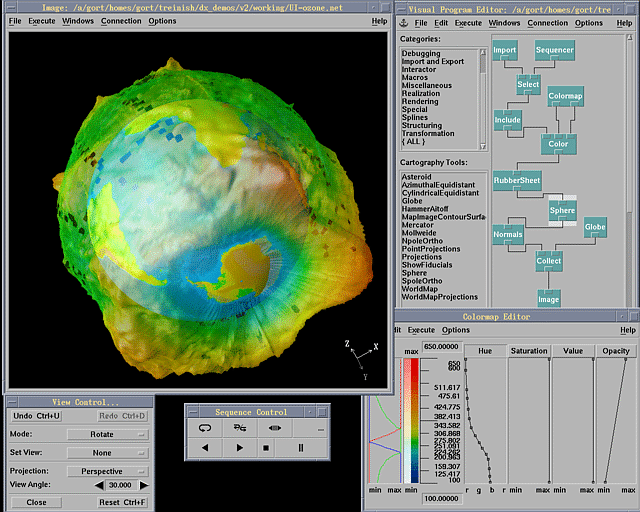

- science -
|  |
The Panel reviewed science programs in the Spring of 2000. . The Panel is composed of 14 experts in mathematics or science from around the country. It includes academics, association representatives, regional lab representatives, and practitioners. 2000 Promising Mathematics Programs-The Department and the Expert Panel on Mathematics and Science Education have identified two promising mathematics programs in addition to the ones recognized in October 1999. |
AWM publishes a bi-monthly newsletter on professional opportunities, news of women in mathematical sciences, and book reviews. Among other activities, AWM administers an electronic network and sponsors events aimed at high school students. edu Association for Women in Science (AWIS) AWIS is an organization dedicated to increasing the educational and employment opportunities for both girls and women in all fields of science. Association for Women in Science - Bloomington, Indiana Chapter Association for Women in Science - North-East Chapter (AWIS-NE) Association for Women in Science - Los Angeles Chapter (AWIS-L. ) Association for Women in Science - Seattle Area Chapter (AWIS-SA) Association for Women in Science - West Virginia Chapter (AWIS-WV) Association for Women in Science and Engineering in the UK (AWISE) AWISE acts as a forum, support group, and information center for women scientists and engineers.
 |
Mike Ward, State Superintendent NCDPI Phil Kirk, Chair State Bd of Ed North Carolina Department of Public Instruction 301 N. . Publications Science Curriculum Purpose The North Carolina Science Standard Course of Study is designed to ensure that our state produces scientifically literate students. Scientific literacy implies an understanding of the scientific concepts and processes needed for personal decision-making, participation in civic affairs, and economic productivity. The scientifically literate person has a substantial understanding of scientific concepts and inquiry skills, which enable one to continue to learn and think logically. |
 |
those come through in the way the information they've found in various scientific fields along with the knowledge. (goes against) religion, but instead it is scientism (the religion) that wars (vies for power over, it's own place with) all the other various religions. Yet none of those has anything to do with true science or true spirituality. .. |
another science site: http://www.yahoo.com/Science/Computer_Science/Real_Time_Computing/